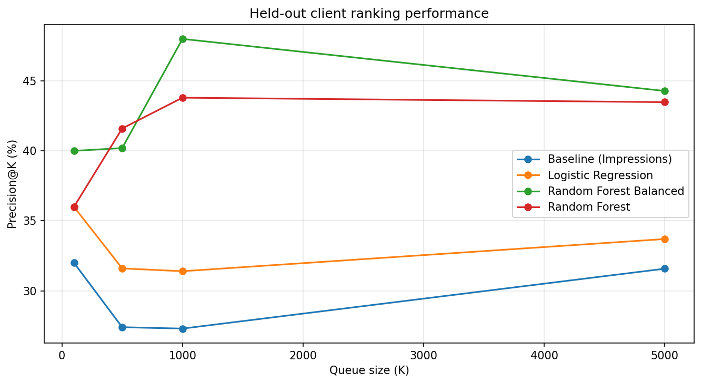
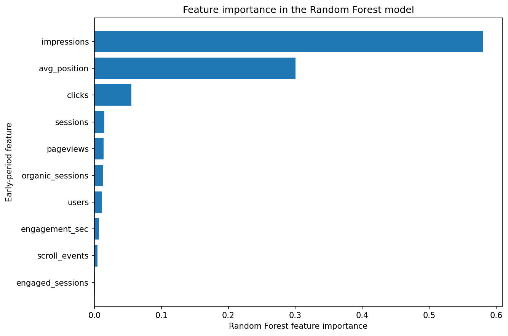

Abstract
This study asks whether early-period search and engagement signals can be used to rank content pages for human review based on their observed risk of declining search visibility in a later period.
Using the FlyRank ML Internship Warehouse dataset, March 2026 observations were divided into an early feature window and a later outcome window, producing a modeling dataset of 319,759 content items across 52 pseudonymized clients.
A simple impressions-based ranking baseline, Logistic Regression, Random Forest, and balanced Random Forest were evaluated using a grouped train-test split that held out entire clients.
The balanced Random Forest produced the strongest overall ranking performance, reaching Precision@1,000 of 48.0% compared with 27.3% for the impressions baseline on the same held-out client set.
The resulting system is intended as directional decision-support for prioritizing human investigation and does not establish causal relationships or guarantee that refreshing or modifying content will improve future performance.
1. Introduction / Problem Statement
The practical problem is not simply detecting changing content performance—it is deciding where limited human review time should be spent first.
Research Question
Can early-period content performance signals be used to rank content pages for human review based on their observed risk of declining in a later period?
This project studies whether search and engagement signals observed during an early time window can help identify pages that later show lower average daily search impressions.
The Decision Supported
Content teams may have more pages to review than they have editorial capacity to investigate. Reviewing every page equally can therefore be inefficient.
Which content pages should a human reviewer investigate first for possible signs of declining search visibility?
The output is a ranked review queue. Pages near the top are not automatically refreshed, rewritten, deleted, or modified. Their ranking indicates that, based on observed early-period signals and the validated model, they may be worth reviewing earlier than lower-ranked pages.
The intended use is therefore prioritization for human investigation, not autonomous content management.
2. Data
The analysis uses pseudonymized production search and content-performance data in a public-safe format.
Data Source
This project uses the FlyRank ML Internship Warehouse dataset, release v20260703. The warehouse contains pseudonymized production search and content-performance data.
The analysis uses the
fact_content_daily_performance table, where each
record represents a daily observation for a pseudonymized
content item within a pseudonymized client portfolio.
No client names, domains, URLs, private search queries, or credentials are included in this public analysis.
Time Window
The capstone focuses on March 2026. The month was divided into two non-overlapping periods:
- Early observation period: March 1–15, 2026
- Later outcome period: March 16–31, 2026
The early period was used to construct input features. The later period was used only to define the observed decline outcome.
This separation preserves the intended temporal direction of the analysis: later-period information was not used as a model feature.
March 2026 Extract
The March dataset contained 9,841,378 daily observations.
- Early period: 4,642,255 rows
- Later period: 5,199,123 rows
Daily observations were aggregated to the content-item level using pseudonymized client and content identifiers as grouping keys.
Features Available for Modeling
The final analysis used early-period search and engagement signals including:
- Impressions
- Clicks
- Average search position
- Pageviews
- Sessions
- Users
- Engaged sessions
- Engagement time
- Organic sessions
- Scroll events
Data Availability Considerations
Search and analytics availability was not uniform across all clients and reporting rows.
Of the 52 clients present in the early-period data, 44 had at least some GSC data available, while 8 had no GSC availability during the early period. No client had GSC data available for every early-period row.
Availability flags were checked during data preparation because unavailable measurements should not automatically be interpreted as genuine zero performance.
3. Methodology
The problem was framed as a prediction and ranking task: use measurements from an earlier observation period to prioritize content items for human review based on modeled decline risk.
Time-Window Design
The March 2026 data was divided into two non-overlapping periods.
- Early period: March 1–15, 2026
- Later period: March 16–31, 2026
Early-period measurements were used to construct model features. Later-period measurements were reserved for constructing the outcome used to evaluate decline.
Model Features
The final model used ten measurements derived from the early observation period:
- Impressions
- Clicks
- Average search position
- Pageviews
- Sessions
- Users
- Engaged sessions
- Engagement time
- Organic sessions
- Scroll events
These variables describe observed search visibility and user activity during the early period. They are model inputs and should not be interpreted as evidence that any individual signal causes later decline.
Target Definition: Observed Decline
The target variable, is_declining, was constructed
by comparing average daily search impressions across the two
non-overlapping periods.
The early period contained 15 days and the later period contained 16 days. Total impressions were therefore converted to average daily impressions before comparison.
A content item was labeled as declining
(is_declining = 1) when:
- It had more than zero impressions during the early period.
- Its average daily impressions during the later period were lower than its average daily impressions during the early period.
Content items that did not meet these conditions were labeled
as non-declining (is_declining = 0).
This label represents an observed decrease in average daily search impressions between the selected periods. It does not establish why the decrease occurred.
Baseline
The machine-learning models were compared with a simple, transparent ranking baseline based on early-period impressions.
For the baseline, content items in the held-out test set were ranked from highest to lowest by early-period impression volume.
This tests whether the models concentrate observed declining items nearer the top of the review queue more effectively than prioritizing highly visible content alone.
The held-out test-set decline rate was approximately 18.4%, providing context for interpreting ranking performance.
Validation Design
The primary validation design used a grouped train-test split
based on client_hash_id.
A GroupShuffleSplit used a test proportion of
20% and a fixed random state of 42.
- Training set: 265,352 content items from 41 clients
- Held-out test set: 54,407 content items from 11 clients
No client appeared in both the training and test sets.
This design reduces the risk of evaluating the model on content from clients already seen during training. Performance was therefore evaluated on held-out clients.
Because the intended output is a ranked review queue, performance was evaluated using Precision@K at K = 100, 500, 1,000, and 5,000.
Leakage Checks
A leakage audit was performed on the final feature set to check whether future-period outcomes or target-related columns were accidentally included as model inputs.
The following columns were explicitly excluded from the final model features:
late_impressionslate_daily_impressionsis_declining
No direct future-period information leakage was identified in the final feature set.
Two limitations remain important. Early-period impressions are both a model feature and part of the comparison used to construct the decline label, although this is not future-period leakage. In addition, some GA4-derived features may include zero-filled periods caused by unavailable GA4 data rather than genuine zero engagement.
4. Results
All methods were evaluated on the same held-out client set using Precision@K.
Main Result
The held-out test set had an overall observed decline rate of approximately 18.4%.
The balanced Random Forest produced the strongest overall ranking performance across the evaluated queue sizes.
- Precision@100: 40.0%
- Precision@1,000: 48.0%
- Precision@5,000: 44.3%
At K = 1,000, the balanced Random Forest concentrated observed declining items in 48.0% of the top-ranked pages, compared with 27.3% for the impressions baseline and 31.4% for Logistic Regression.
Model Comparison
| Queue Size (K) | Baseline | Logistic Regression | Random Forest Balanced | Random Forest |
|---|---|---|---|---|
| 100 | 32.0% | 36.0% | 40.0% | 36.0% |
| 500 | 27.4% | 31.6% | 40.2% | 41.6% |
| 1,000 | 27.3% | 31.4% | 48.0% | 43.8% |
| 5,000 | 31.6% | 33.7% | 44.3% | 43.5% |

Feature Importance
Feature importance values were examined to interpret which early-period signals the fitted Random Forest relied on most heavily.
Early-period impressions received the largest importance value (0.580), followed by average search position (0.300). The remaining features had substantially smaller importance values.

5. Limitations & Honest Framing
This work is designed as a directional decision-support analysis, and its results should be interpreted within the dataset and validation design used here.
No Causal Claims
The analysis identifies patterns associated with observed content decline and evaluates how well models rank declining items on held-out clients.
It does not establish that any individual feature causes content decline.
The results also do not show that refreshing, rewriting, or modifying a recommended page will improve future performance. Demonstrating causal refresh impact would require an intervention or experimental design.
Limited Outcome Definition
The decline label is based on a comparison between early-period and later-period impressions.
This provides one practical operational definition of decline for ranking content for review, but it is not a universal definition of content performance.
Dataset and Time-Period Limits
The findings are based on the FlyRank internship dataset and the selected March 2026 observation and outcome periods.
Patterns observed in this dataset may not generalize to every website, client, content portfolio, or future time period.
Feature and Data Availability Limits
The model uses a limited set of early-period search and engagement signals. Other potentially relevant factors were not included in the final feature set.
Some GA4-derived metrics may also be affected by data availability, meaning some zero-filled periods may not always represent genuine zero activity.
Model Interpretation Limits
Feature importance values show which variables the fitted Random Forest relied on most heavily when constructing its ranking. They do not measure causal effects.
For example, the high importance of early-period impressions does not mean that changing impressions would cause future decline.
Ranking, Not Automatic Action
The model produces a ranked review queue, not an automatic content-management system.
A high decline-risk score should be treated as a signal that an item may be worth human review. A reviewer should still examine content context, data quality, business relevance, and possible explanations before taking action.
6. Ranked Recommendations
The final output is an action-oriented review queue designed to help humans decide where to investigate first.
Recommended Review Workflow
- Start with the highest-ranked content items.
- Read the reason codes and supporting signals.
- Check data quality and content context.
- Decide whether the item needs investigation, monitoring, refreshing, rewriting, consolidation, or no action.
- Record the human decision so future analysis can distinguish model recommendations from actual actions.
Recommended Actions After Human Review
| Review Outcome | Suggested Action |
|---|---|
| Content remains relevant but appears to be losing visibility | Review and consider refreshing the content |
| Topic remains valuable but no longer matches current search intent | Review for substantial improvement or rewriting |
| Page has overlapping or redundant content | Consider consolidation or merging after review |
| Content remains strategically valuable and performs adequately | Protect and monitor |
| Recommendation appears driven by unusual or questionable data | Investigate data quality before taking action |
Example Ranked Review Queue
The following public-safe example shows the highest-priority items produced by the ranking workflow. No client names, URLs, or content identifiers are included.
| Rank | Decline Risk | Early Impressions | Average Position |
|---|---|---|---|
| 1 | 96.8% | 16,091 | 39.99 |
| 2 | 96.8% | 17,902 | 33.88 |
| 3 | 96.5% | 1,684 | 33.03 |
| 4 | 96.4% | 24,759 | 38.65 |
| 5 | 96.3% | 1,246 | 30.48 |
| 6 | 96.2% | 4,975 | 49.79 |
| 7 | 96.1% | 18,139 | 36.06 |
| 8 | 96.0% | 2,708 | 37.57 |
| 9 | 95.8% | 20,267 | 32.65 |
| 10 | 95.6% | 893 | 45.96 |
Reason Codes
Each ranked recommendation is accompanied by simple, human-readable reason codes.
Example:
Ranked #1 by the model's decline-risk score | High early-period impression volume | Weaker average search position relative to this dataset
Reason codes are intended to make the ranking easier for a human reviewer to interpret. They describe signals associated with an item's position in the review queue and do not prove why that content declined.
The Practical Insight
Content performance can change over time, so content review should not rely only on a page's historical importance.
Pages with substantial early-period visibility may still deserve attention when the model identifies a pattern associated with observed decline. This creates a practical review opportunity because high-visibility content may represent greater potential value for investigation.
However, the results do not show that refreshing content will reverse decline. A refresh recommendation should therefore be treated as a hypothesis for human review rather than an expected outcome.
7. Reproducibility
The project repository contains the notebooks and supporting work used to build this analysis.
Project Repository
The full project repository contains the capstone notebook, weekly assignment work, supporting materials, and deployment files.
How the Analysis Can Be Reviewed
-
Inspect the capstone notebook under
work/notebooks/. - Review the feature construction and target definition.
- Review the grouped validation design and leakage checks.
- Compare the models against the impressions baseline on the same held-out client set.
- Inspect the public-safe charts and ranked recommendation outputs.
8. Acknowledgments & Data Credit
This project was built as part of the FlyRank ML Internship.
Built on the FlyRank ML Internship dataset .
The public version of this research paper intentionally excludes client names, domains, URLs, private search queries, credentials, and raw data exports.